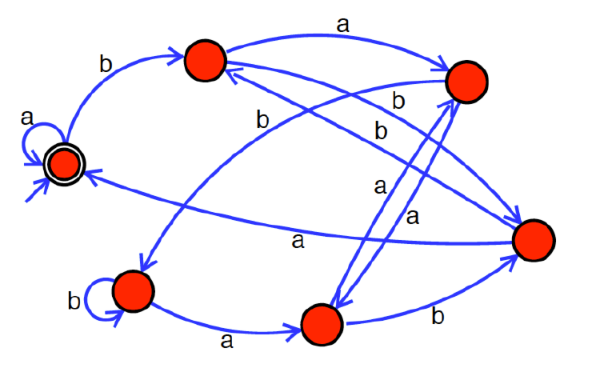

田中哲郎クラス（理科一類24,26,34組）｜7月29日（火）5限
4つの記号A,T,C,Gから構成される記号列を、0と1のビット列に符号化することを考える。以下の文の空白部分(a)-(f)を埋めなさい。
$A\to00,T\to01,C\to10,G\to11$と符号化する時、記号列「CGCTGCGTAG」を符号化したビット列は (a) となる。また、符号化したビット列が「0001101101」となるような記号列は (b) である。
(a) 記号列「CGCTGCGTAG」を1文字ずつ符号に置き換える：
| 記号 | C | G | C | T | G | C | G | T | A | G |
|---|---|---|---|---|---|---|---|---|---|---|
| 符号 | 10 | 11 | 10 | 01 | 11 | 10 | 11 | 01 | 00 | 11 |
これを左から順につなげると、$10\,11\,10\,01\,11\,10\,11\,01\,00\,11$、すなわち10111001111011010011（10記号×2ビット＝20ビット）というビット列になる。
(b) この符号は1記号がつねに2ビットに対応する固定長符号なので、復号はビット列を先頭から2ビットずつ機械的に切り分けるだけでよい。「0001101101」（10ビット）を2ビットずつ区切ると、
| ビット列 | 00 | 01 | 10 | 11 | 01 |
|---|---|---|---|---|---|
| 記号 | A | T | C | G | T |
となり、元の記号列はATCGTと分かる。
4つの記号A,T,C,Gの出現確率はそれぞれ、10%,20%,30%,40%であるとする。この時、$A\to000,T\to001,C\to01,G\to1$と符号化すると、記号列「GGCTGCGTAG」を符号化したビット列は (c) となり、(1)の符号化よりも短くなる。また、符号化したビット列が「0001101101」となるような記号列は (d) である。
この符号は、出現確率が高い記号ほど短い符号語を割り当てる可変長符号である（G=40%に1ビット、C=30%に2ビット、T=20%とA=10%に3ビット）。$000,001,01,1$はどの符号語も他の符号語の先頭部分（接頭辞）になっていない——たとえば「1」（G）は「01」（C）や「000」（A）の先頭とは一致しない——ため、これは接頭符号（prefix code）であり、ビット列を先頭から貪欲に読んで「どの符号語に一致するか」を確定していけば、区切り記号なしで一意に復号できる。
(c) 記号列「GGCTGCGTAG」を1文字ずつ符号に置き換える：
| 記号 | G | G | C | T | G | C | G | T | A | G |
|---|---|---|---|---|---|---|---|---|---|---|
| 符号 | 1 | 1 | 01 | 001 | 1 | 01 | 1 | 001 | 000 | 1 |
つなげると $1\,1\,01\,001\,1\,01\,1\,001\,000\,1$、すなわち110100110110010001というビット列になる。符号語の長さの合計は$1+1+2+3+1+2+1+3+3+1=18$ビットであり、(1)の固定長符号（常に20ビット）よりも短い——出現頻度が高いG（この記号列に4回出現）に一番短い符号語（1ビット）を割り当てたことで、全体の符号長が縮んでいる。
(d) 「0001101101」を先頭から貪欲に読み、接頭符号の性質（000,001,01,1のどれかに一致した時点で確定してよい）を使って区切っていく：
消費ビット数は$3+1+1+2+1+2=10$で元のビット列の長さと一致する。よって復号される記号列はA,G,G,C,G,C（AGGCGC）である。
4つの記号A,T,C,Gの出現確率がそれぞれ、1%,1%,3%,95%の時に、1記号あたりの平均情報量を有効数字2桁で計算すると (e) ビットとなる。また、(2)と同じように符号化した時の1記号あたりの平均符号長は (f) ビットとなる。なお、計算の際には以下の値を必要な桁数だけ使うこと：$\log_2 100 \fallingdotseq 6.643856189774725$、$\log_2 3 \fallingdotseq 1.5849625007211563$、$\log_2 95 \fallingdotseq 6.569855608330948$。
(e) 1記号あたりの平均情報量とは、確率分布のエントロピー$H=-\sum_i p_i\log_2 p_i$である。$p_A=p_T=0.01,\ p_C=0.03,\ p_G=0.95$として、まず各記号の$\log_2 p_i$を与えられた値から求める：
$\log_2 0.01=\log_2\dfrac{1}{100}=-\log_2100=-6.643856189774725$
$\log_2 0.03=\log_2\dfrac{3}{100}=\log_23-\log_2100=1.5849625007211563-6.643856189774725=-5.058893689053569$
$\log_2 0.95=\log_2\dfrac{95}{100}=\log_295-\log_2100=6.569855608330948-6.643856189774725=-0.074000581443777$
これらを使ってエントロピーを計算する：
$$H=-\bigl(2\times0.01\times\log_20.01+0.03\times\log_20.03+0.95\times\log_20.95\bigr)$$ $$=0.01\times6.643856\times2+0.03\times5.058894+0.95\times0.074001$$ $$=0.132877+0.151767+0.070301=0.354945$$
有効数字2桁で表すと$H\approx$0.35ビットとなる。
(f) (2)と同じ符号（$A\to000$（3ビット）,$T\to001$（3ビット）,$C\to01$（2ビット）,$G\to1$（1ビット）)を、この新しい確率分布$(1\%,1\%,3\%,95\%)$に適用したときの1記号あたりの平均符号長$L$は、各記号の符号長にその出現確率を掛けて足し合わせたものである：
$$L=0.01\times3+0.01\times3+0.03\times2+0.95\times1=0.03+0.03+0.06+0.95=1.07$$
したがって平均符号長は1.07ビットとなる。
(2)の符号$A\to000,T\to001,C\to01,G\to1$は、出現確率が$(10\%,20\%,30\%,40\%)$という分布を想定して設計されたものである。この分布のもとでは、この符号の平均符号長はエントロピーに近い、効率のよい符号になっている。しかし(3)のように実際の分布が$(1\%,1\%,3\%,95\%)$のようにGへ極端に偏っていた場合、この符号を使い続けると平均符号長は$1.07$ビットになる一方、この分布そのもののエントロピーは$0.35$ビットしかない——つまり本来なら1記号あたり0.35ビット程度まで圧縮できる情報を、想定とずれた符号のせいで1.07ビットも使ってしまっている。これは情報源符号化における基本的な教訓で、「符号語の長さは、その記号が実際にどれだけ頻繁に現れるかに合わせて設計しなければ効率が悪くなる」ということを表している。実際にはGが95%も出現するのだから、Gにこそ最短の符号語を割り当てるのが理にかなっている（この場合はもともとGに1ビットを割り当てているため方向性は正しいが、A・Tにも3ビットずつ使っているぶん、Gの支配的な出現頻度に対しては依然として非効率である）。
以下の図はあるオートマトンを表している。

以下はこのオートマトンの動作を説明するチェック表である。(a)-(e)を埋めて、チェック表を完成させなさい：
| 入力 | 終了状態 |
|---|---|
| 無し | Yes |
| b | No |
| bb | No |
| bba | Yes |
| baab | (a) |
| bbaa | (b) |
| bababa | (c) |
| baaba | (d) |
| bbaab | (e) |
また、以下はこのオートマトンの動作を説明したものである。(f)を埋めて、説明を完成させなさい：「aとbだけからなる入力を、「a」が0、「b」が1に対応した2進数だと読みかえる。このとき、入力された数が (f) の時に終了状態となるオートマトン。」
図の6つの状態は、「aを0、bを1と読みかえた2進数の値を6で割った余り」に対応している。開始・受理状態が余り0、P1が余り1、P2が余り2、R3が余り3、R2が余り4、R1が余り5である。新しい文字（0または1）を1つ読むごとに、値は「2倍して新しい桁を足す」ので、状態（余り）の更新規則は
$$\text{新しい余り}=(2\times\text{現在の余り}+d)\bmod 6\qquad(d=0\text{：aを読んだ},\ d=1\text{：bを読んだ})$$
となる。これは図の遷移とすべて一致する：P1（余り1）はaで$2\times1+0=2$（P2）、bで$2\times1+1=3$（R3）に進み、P2（余り2）はaで$4$（R2）、bで$5$（R1）に進む。R1（余り5）はaで$2\times5+0=10\equiv4$（R2）、bで$2\times5+1=11\equiv5$（R1自身、自己ループ）に進み、R2（余り4）はaで$2\times4+0=8\equiv2$（P2）、bで$2\times4+1=9\equiv3$（R3）に進み、R3（余り3）はaで$2\times3+0=6\equiv0$（開始状態、長い矢印）、bで$2\times3+1=7\equiv1$（P1）に進む。開始状態（余り0）は自己ループのaでそのまま余り0を保つ。
この規則で与えられた4例を確認すると：b（値1、$1\bmod6=1$）→No、bb（値$11_2=3$、$3\bmod6=3$）→No、bba（値$110_2=6$、$6\bmod6=0$）→Yesとなり、すべて問題文の例と一致する。これに基づいて残りを計算する。
(f) 以上より、この機械が受理するのはちょうど値が6の倍数（6で割り切れる数）であるときである。
暗証番号「abb」または「ababc」が入力されたときに解錠する（終了状態になる）電子錠をオートマトンとしてモデル化することを試みる。ただし、途中間違った暗証番号を押しても後からどちらかの暗証番号を入力すれば解錠するものとする。また一度解錠した後は何を入力し続けても解錠状態となる。以下はこのオートマトンの動作を説明するチェック表である。(g)-(j)を埋めて、チェック表を完成させなさい：
| 入力 | 終了状態 |
|---|---|
| 無し | No |
| acabb | Yes |
| aababca | Yes |
| abaca | (g) |
| ababba | (h) |
| aabc | (i) |
| acababc | (j) |
また、この条件を満たすオートマトンを作成して図にしなさい。
「abb」と「ababc」の2つのパターンを同時に監視するので、個別問題2018(2)・2019(2)と同じ考え方（Aho-Corasick法：複数パターンの部分一致状況をひとつの状態としてまとめる構成）で組み立てる。各状態は「これまでに読んだ文字列の末尾が、2つのパターンのどこまでと一致しているか」を表す。必要な状態は次の6つである：
遷移は、「今の一致状況に新しい文字を1つ加えた文字列」の末尾が、2つのパターンのどの接頭辞に最長で一致するかで決める：
| 状態 | a | b | c |
|---|---|---|---|
| $s_0$（開始） | $s_1$ | $s_0$ | $s_0$ |
| $s_1$（"a"） | $s_1$ | $s_2$ | $s_0$ |
| $s_2$（"ab"） | $s_3$ | $U$ | $s_0$ |
| $s_3$（"aba"） | $s_1$ | $s_4$ | $s_0$ |
| $s_4$（"abab"） | $s_3$ | $U$ | $U$ |
| $U$（解錠） | $U$ | $U$ | $U$ |
各遷移の根拠を確認する。$s_2$（"ab"に一致）で"b"を読むと末尾が"abb"となり「abb」が完成するので$U$へ（解錠）。$s_2$で"a"を読むと末尾は"aba"となり「ababc」の先頭3文字に一致するので$s_3$へ。$s_3$（"aba"に一致）で"b"を読むと末尾が"abab"となり「ababc」の先頭4文字に一致するので$s_4$へ。$s_3$で"a"を読むと末尾は"abaa"だが、これは末尾を短く見ても"a"としか一致しないので$s_1$へ戻る。$s_4$（"abab"に一致）で"b"を読むと末尾は"ababb"となるが、これは全体としては「ababc」に一致しないものの、末尾の3文字"abb"を見れば「abb」が完成しているので$U$へ（解錠）。$s_4$で"c"を読むと「ababc」がちょうど完成するので$U$へ。$s_4$で"a"を読むと末尾は"ababa"で、これは"aba"の部分にしか一致しないので$s_3$へ。どの状態でも"c"を読んで一致が続かない場合は無一致の$s_0$に戻る（"c"はどちらのパターンの先頭文字にもならないため）。
この構成が問題文中の例と合うことを確認する。acabb：$s_0\xrightarrow{a}s_1\xrightarrow{c}s_0\xrightarrow{a}s_1\xrightarrow{b}s_2\xrightarrow{b}U$（解錠、Yes）。aababca：$s_0\xrightarrow{a}s_1\xrightarrow{a}s_1\xrightarrow{b}s_2\xrightarrow{a}s_3\xrightarrow{b}s_4\xrightarrow{c}U\xrightarrow{a}U$（解錠、Yes）。いずれも問題文の指定と一致する。この確認の上で残りを計算する。
(2)の暗証番号錠は、複数のキーワード（ここでは「abb」と「ababc」）を同時に監視する検索オートマトン（Aho-Corasick法の考え方）の小さな例である。各状態は「これまで読んだ文字列の末尾が、探しているパターンのどこまでに一致しているか」だけを覚えており、それ以外の情報（もっと前にどんな文字が来たか）はいっさい保持しない。(1)のmod 6判定オートマトンも、状態は「これまでの値を6で割った余り」だけを覚えており、実際の値そのもの（どんどん大きくなる可能性がある2進数）は覚えていない。見た目も応用の文脈も全く異なる2つのオートマトンだが、どちらも「無限に長くなりうる入力履歴のうち、その先の判定に必要な情報だけを、有限個の状態に要約する」という有限状態機械の本質的なアイデアを共有している。